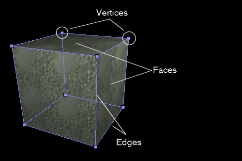
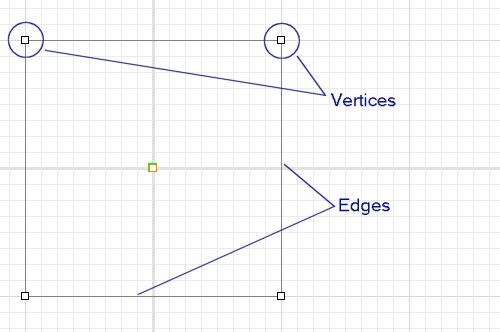
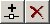
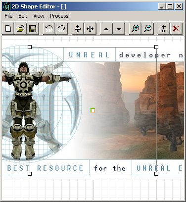
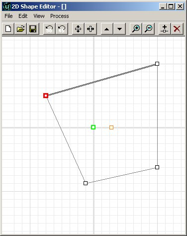
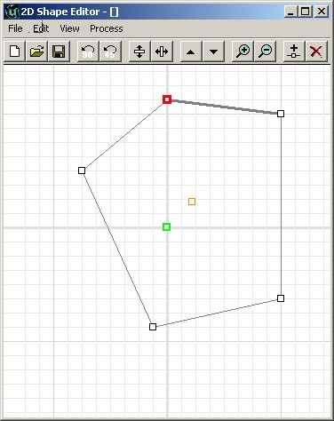
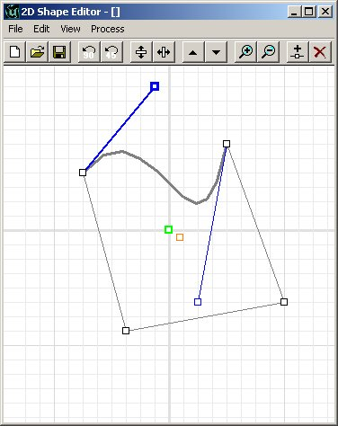
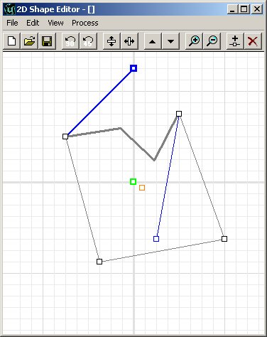
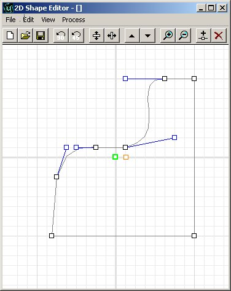
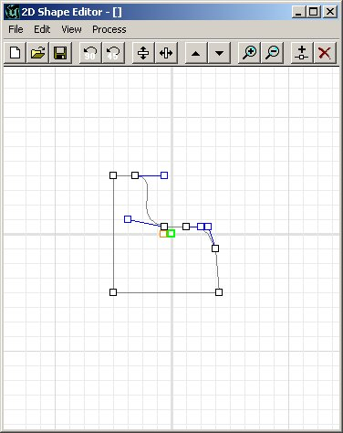

UDN
Search public documentation:
ShapeEditor
日本語訳
한국어
Interested in the Unreal Engine?
Visit the Unreal Technology site.
Looking for jobs and company info?
Check out the Epic games site.
Questions about support via UDN?
Contact the UDN Staff
한국어
Interested in the Unreal Engine?
Visit the Unreal Technology site.
Looking for jobs and company info?
Check out the Epic games site.
Questions about support via UDN?
Contact the UDN Staff
2D Shape Editor
Document Summary: A reference for how to use the Shape Editor tool. Document Changelog: Last updated by Jason Lentz (DemiurgeStudios?), to update for the 2110 build. Original author was Tomasz Jachimczak (UdnStaff).Introduction
The 2D Shape Editor allows much more complex shapes to be created than with the normal primitive brush builders. While the features are very useful and well implemented, the Shape Editor has not been designed to replace a modeler and 3DMax combination. This document explains in detail all the features and how to get the most from them. Initially, to open the 2D Shape Editor, select the Tools Menu, then click on 2D Shape Editor. This will open the editor tool, and present you with the following image. It is a basic square shape for now.
 The 2D Shape Editor works in the following fashion. You can create a two dimensional shape, give it as many edges, create straight edges, or bezier edges and then finally extrude, revolve or extrude it to a point to create a three dimensional shape that can be used in the editor.
Before this document gets into the real creation of a shape, there are a few terms that you should be familiar with. A vertex is a point on a shape where edges of the shape meet. The plural term for vertex is vertices. The edges of the shape are in a way the lines that join the vertices together, and the flat area bounded by a set of edges is a face.
This image shows on a simple cube shape what a vertex, edge and face are.
The 2D Shape Editor works in the following fashion. You can create a two dimensional shape, give it as many edges, create straight edges, or bezier edges and then finally extrude, revolve or extrude it to a point to create a three dimensional shape that can be used in the editor.
Before this document gets into the real creation of a shape, there are a few terms that you should be familiar with. A vertex is a point on a shape where edges of the shape meet. The plural term for vertex is vertices. The edges of the shape are in a way the lines that join the vertices together, and the flat area bounded by a set of edges is a face.
This image shows on a simple cube shape what a vertex, edge and face are.

Taking this knowledge to the 2D Shape Editor, the shape we create is going to be a face of the brush (The exact face is still yet to be set - though it will become one of the faces), the lines bounding the shape that is created become the edges, and the little boxes that are dragged around to make the shape become the vertices. This image shows the vertices and edges of the future three-dimensional brush in the 2D Shape Editor.
Buttons in the 2D Shape Editor
There is a line of buttons along the top of the 2D Shape Editor. These are shortcut buttons that perform various functions. All the functions are available through the normal menu along the top of the editor, but can be accessed quicker through these. If there is a keyboard shortcut for a specific button, it is also mentioned in the description for the function. The buttons are split into 8 groups. They are in order:New, Open, Save
Rotate the Shape
Flip Vertical / Horizontal
Scale Up / Down
Zoom In / Out
Create Vertex, Delete Vertex

Create Vertex: This will halve the active segment (The Active Segment is the edge that is a darker shade of gray) and create a new vertex in the middle of the segment. The edge that was previously the Active Segment is deleted, and two new segments replace it, spanning from the bounding vertices to the new vertex created. Shortcut Key: CTRL I Delete Vertex: This will delete the current vertex that is selected (The currently selected vertex is the one that is red). The edges that spanned from it to the two surrounding vertices are deleted and a new edge is created between those bounding vertices. Shortcut Key: DelMake Linear, Make Bezier
Create Brushes
Background Images
The background of the Shape Editor can be set to a bitmap file (useful for creating brushes around specific textures). There are two options for using a background image. The first is "Open From Disk" and it works perfectly well. It will open the image, and place it into the background of the Shape Editor. The scale that is used is one pixel per 1 grid measurement. The second option is "Get From Current Texture" which will cause the editor to crash (Current at Build 829) and obviously it is not recommended for use. Note that only bitmap (.bmp) files are supported as background images. The Background image will not be tiled, and the grid is visible around it.
The Background image will not be tiled, and the grid is visible around it.

Creating a Shape
Creating and Deleting Vertices
Now, getting down to the real action with this tool. The vertices can be moved around to achieve the shape that you require. To move a vertex, simply left-click (and hold) the vertex and drag it to the location that is needed. Notice how as soon as you click the vertex it becomes red and one of the edges is darkened? These are now the current vertex and current edge that you are working with.
As you move the vertices around, there is a free-floating vertex that moves around as well, you have no doubt noticed. This is the pivot point of the future brush, but more on that later. To add an additional vertex to the shape, you can either click the "Split Segment" button, or hit CTRL I as a shortcut. This feature will place a new vertex in the middle of the current edge. As soon as this new vertex is added, it can be moved like any other vertex.
You can delete a vertex from the shape, and the two vertices around it are joined with a new edge between each other. The shortcut for deleting a vertex is simply the Del key.Bezier and Linear Edges
The shape editor supports 2 types of edges. It supports straight lines, which we have used so far, and it supports bezier lines, which can give much smoother effects and create much more curved lines quickly. To create a bezier edge on the shape, simply click the bezier segment button, or choose Edit>Segment>Bezier. You will find that 2 blue handles have been added to your edge. As you move these around, the edge between them flexes to form the smoothest line possible. The farther away from the vertex that you drag a handle, the more force is exerted on that part of the bezier curve. The end of the handle is the point where the line is dragged. Playing with these for a few seconds will quickly explain what I cannot do in more detail in words.
An additional feature of Bezier edges is the ability to change how detailed they are. This segment has a detail level of 3 set. This means that there are 3 sub segments to the edge.
This is the same segment (with no changes other than segment detail) but with a segment detail of 10. You can see instantly how smooth the edge has become. Please note that when you change the detail level, you only do so for the current edge. You may create edges that differ in detail. For the sake of framerate later, try to restrict the number of vertices used if possible.
Shape Rotation and Mirroring
Starting once again with a clean shape (hit the "New" button, or select File>new) and once again we have a simple square shape that we can work with. Moving a few vertices to make a different shape, and adding a vertex or two for the sake of practice will provide another shape to change and alter in this document.
Oops, I just made that facing the wrong way - (Can you believe this pathetic excuse to show another feature?) I could manually move each of the vertices to turn it to face the other way, but there is of course a much simpler way. The shape can be flipped both horizontally and vertically through a simple click on the Flip Vertical or Flip Horizontal buttons. The shape can also be rotated through the use of the rotate buttons - but be warned that ALL bezier edges are altered back to a linear edge when rotation is applied.
The brush may be scaled as well using the simple scale up/down buttons. All changes made either double the size, or halve it.
The shape can also be rotated through the use of the rotate buttons - but be warned that ALL bezier edges are altered back to a linear edge when rotation is applied.
The brush may be scaled as well using the simple scale up/down buttons. All changes made either double the size, or halve it.

Multiple Concurrent Shapes
The Shape Editor also supports multiple shapes in the same area. It is quite possible to create two separate shapes that form one brush very easily. However note that if any of the vertices of the original shape overlap vertices from the secondary shape, it is impossible to separate them properly. That is, if there is more than one vertex on a single point, they are moved together. To insert an additional shape into the Shape Editor, select Edit>Insert New Shape and another square is placed into the default area. For all effective purposes, this shape is just like the first one, and is not in any way connected to the first.
Grid Size and Resizing
The vertices so far have all snapped to the grid, which is perfectly normal. The grid settings can be easily changed to the standard grid settings in the editor as well though, easily going from 1 unit to 64 units per grid square. Note that if a grid size is increased and leaves a vertex off the exact grid intersection, the next time it is moved, it will of course snap to the grid.
Saving Shapes and Reloading Shapes
Once the shape required is created, it can be saved and loaded again either in a future editing session on the same map or in a totally different map. The brushes created are also not dependant in any way on the saved files if they are saved. The option to save and load shapes is merely for reuse of shapes and convenience. The shapes are saved in a .2ds format, which is unique to shapes created in the 2D Shape Editor.Creating A Brush
Once your shape is ready to have a brush created from it, there are a few options for how the brush is created. As said at the start of this document, the shape that is made here forms a face of the brush built. Which face it becomes depends on what way the brush is formed. There are a few options here at this point.Creating a Sheet Brush
All the brush examples use the last shape that was created to demonstrate the different options. This in effect creates a two dimensional brush that can be used for a zone portal or any other item. It will create the shape as the only face of the brush of course. To create a sheet brush, either click the sheet button, or choose Process>Sheet. When choosing to create a sheet from the shape, there is only one option that is presented. Choose what plane (axis) to create the shape on, and click Ok.
When choosing to create a sheet from the shape, there is only one option that is presented. Choose what plane (axis) to create the shape on, and click Ok.

Creating a Revolved Brush
The shape you create can also be revolved around the pivot point of the shape(s) to create a round brush. This can be quite effective for curved corridors or for bents pipes for example. To revolve a shape, you must place the pivot point (the loose vertex mentioned at the start of this document) totally on the left, right, top or bottom of the shape - depending on how you will revolve the shape. Logically thinking, if you are revolving the shape on a horizontal plane to create the brush, move the pivot point to the left or right and so forth. The options for revolving a shape are as follows:
Sides: This is the number of sides that will be created.
Sides Per 360: This is the number of sides in a full 360 degree rotation.
Axis: The axis that the shape will be rotated on to create the brush.
The Sides Per 360 in these options, allows the number of steps required for a full rotation to be set. Hence, the revolved shape can be made with 20 sides (for a very round looking, smooth shape) or it can be created with 6 sides (for a hexagonal style brush). The sides refer to the actual number of sides that will be created. If Sides Per 360 is set to 20, and sides is set to10, it will create a semicircle brush. If Sides per 360 is 48 and Sides to 12, a very smooth right angle will be made.
The options for revolving a shape are as follows:
Sides: This is the number of sides that will be created.
Sides Per 360: This is the number of sides in a full 360 degree rotation.
Axis: The axis that the shape will be rotated on to create the brush.
The Sides Per 360 in these options, allows the number of steps required for a full rotation to be set. Hence, the revolved shape can be made with 20 sides (for a very round looking, smooth shape) or it can be created with 6 sides (for a hexagonal style brush). The sides refer to the actual number of sides that will be created. If Sides Per 360 is set to 20, and sides is set to10, it will create a semicircle brush. If Sides per 360 is 48 and Sides to 12, a very smooth right angle will be made.
 After the required settings are entered, clicking Ok will create the brush from the shape. The following brush was set to 48 sides per 360, with 16 sides in the brush, and is rotated on the Y axis around a pivot point to the far left of the shape.
After the required settings are entered, clicking Ok will create the brush from the shape. The following brush was set to 48 sides per 360, with 16 sides in the brush, and is rotated on the Y axis around a pivot point to the far left of the shape.
 This is also a rotation of the exact same shape, with the same settings, but the pivot point has been moved much closer to the shape. As you can see, it created a much sharper bend in the brush.
This is also a rotation of the exact same shape, with the same settings, but the pivot point has been moved much closer to the shape. As you can see, it created a much sharper bend in the brush.

Creating an Extruded Brush
The shape can be extruded, which simply means that the exact shape is created in the brush, but it is extended directly back to form the third dimension. As you can see, there are only two options here. The first is the depth setting, which directly translated to the length of the brush in the editor. Hence a setting of 256 will create a brush 256 units deep - 1024 will create a brush 1024 units deep. Once again, there is an axis option, which will determine in which axis the brush is created.
With a setting of 256 for the depth, and the standard axis, this is the result of the extrusion.
As you can see, there are only two options here. The first is the depth setting, which directly translated to the length of the brush in the editor. Hence a setting of 256 will create a brush 256 units deep - 1024 will create a brush 1024 units deep. Once again, there is an axis option, which will determine in which axis the brush is created.
With a setting of 256 for the depth, and the standard axis, this is the result of the extrusion.

Extruding to a Point
Extruding to a point, like the Extrusion method, created a third dimension to the brush with the two dimensional shape as a direct face of the brush, but differs that it will scale the brush in the depth going back to a single point. Extruding a square shape would result in a pyramid being formed, while extruding a circle would result in a cone shape. There are once again only 2 options for extruding to a point, the depth and the axis. Like in the normal brush extrusion, these options result in the depth of the brush in editor units, and the axis that it is extruded in. However, the actual point that is extruded to is not merely the middle of the brush, but rather the location of the Pivot Point on the two dimensional shape. This means that the brush can be extruded to a point behind it (obviously) but also to the side.
There are once again only 2 options for extruding to a point, the depth and the axis. Like in the normal brush extrusion, these options result in the depth of the brush in editor units, and the axis that it is extruded in. However, the actual point that is extruded to is not merely the middle of the brush, but rather the location of the Pivot Point on the two dimensional shape. This means that the brush can be extruded to a point behind it (obviously) but also to the side.
 This extrusion to a point has been made on the usual shape, with the pivot point placed directly in the middle of the shape in the shape editor. It results in a brush that seems to be growing from a single point directly behind it.
This extrusion to a point has been made on the usual shape, with the pivot point placed directly in the middle of the shape in the shape editor. It results in a brush that seems to be growing from a single point directly behind it.
 This extrusion again has the same settings for depth and axis, but the pivot point has been placed a way below the shapes and to the side. The result is easier to see in the 3D viewport when moving around, but this screenshot should give an idea of how the pivot point affects the extrusion.
This extrusion again has the same settings for depth and axis, but the pivot point has been placed a way below the shapes and to the side. The result is easier to see in the 3D viewport when moving around, but this screenshot should give an idea of how the pivot point affects the extrusion.
Extruding to a Bevel
Extruding the shape to a bevel will result in a brush similar to the one that is extruded to a point, but one that is cut off before it reaches the point. The options for this brush creation are CapHeight which relates to the depth of the brush that is created, the depth - which is the imagined point where the brush grows from (same as in an Extrusion to a Point) and the Axis in which the brush is extruded.
Note that the CapHeight is misleading, and a bug has been submitted to Epic. Normally the CapHeight would refer to the amount of the brush clipped, but be aware that this will in build 829 at least refer to the actual depth of the brush.
With the a depth of 256 (hence, the point of recession being 256 units behind the front face of the brush) and the depth as 192 (so that the brush is in fact 192 units), this is the brush that is created from the beveled extrusion.
The options for this brush creation are CapHeight which relates to the depth of the brush that is created, the depth - which is the imagined point where the brush grows from (same as in an Extrusion to a Point) and the Axis in which the brush is extruded.
Note that the CapHeight is misleading, and a bug has been submitted to Epic. Normally the CapHeight would refer to the amount of the brush clipped, but be aware that this will in build 829 at least refer to the actual depth of the brush.
With the a depth of 256 (hence, the point of recession being 256 units behind the front face of the brush) and the depth as 192 (so that the brush is in fact 192 units), this is the brush that is created from the beveled extrusion.